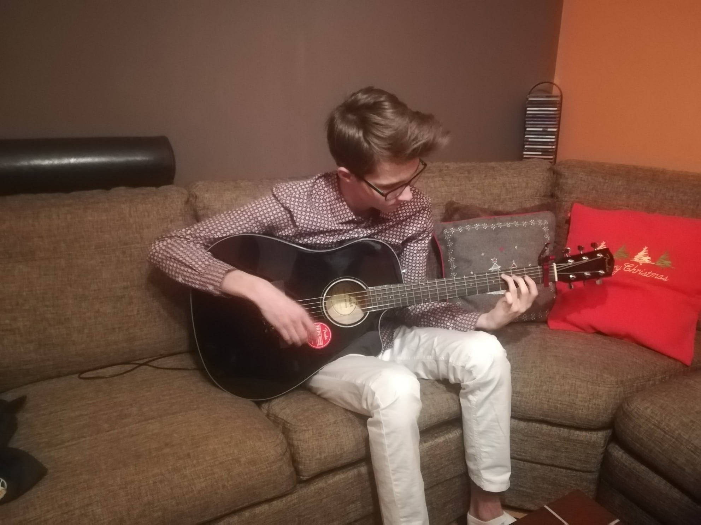

My journey with playing on a guitar!:
First guitar:
I've always dreamt about being able to play an instrument and so... around 4 years ago, maybe 5, I got to play guitar for the first time!
It was my grandfather's guitar and it was a really old one, weathered, with traces of often usage. Nevertheless the guitar had a beautiful sound and after I had borrowed it, I started playing on it non-stop 24/7.
Guitar classes and my improvement:
The very first month of me playing guitar went by incredibly fast. There was no single day without plucking the strings of my instrument and I was practicing maybe like 4-8 hours a day because I couldn't stop.
I've managed to improve my skills and the progress was huge. At one moment I received a new guitar and signed up for guitar classes, which was one of the best choices I have ever made!
Below is a photo of me and my (back then) brand new guitar!
🎸
🎸
And here are some videos of my teacher trying to teach me new songs:
Overall experience and videos of me playing guitar
Nowadays I don't play guitar that often but I still come back to this instrument from time to time. All the memories I've gathered while playing are unforgettable and they helped me become a person that I am today.
In the end I am putting here a couple of tapes of me playing guitar, sorry for your ears:3